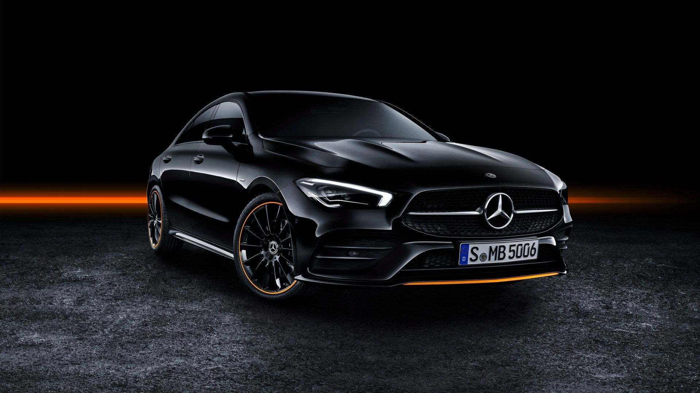
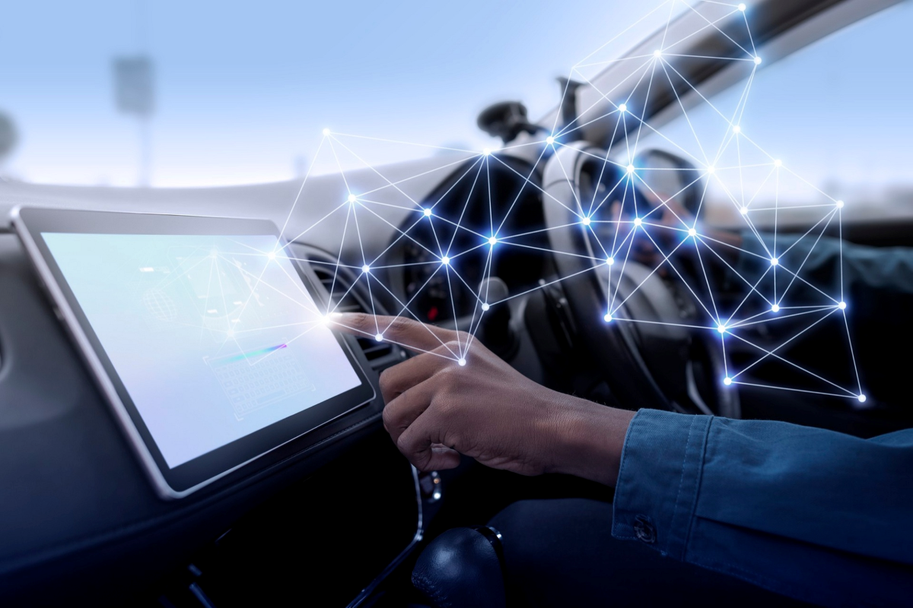

La technologie de Mercedes-Benz
Explorez les technologies modernes développées par Mercedes-Benz pour le futur de l'automobile.

Innovation et futur automobile
La technologie de Mercedes-Benz se concentre sur le confort, la sécurité et l'innovation. Des systèmes comme MBUX facilitent l'interaction avec la voiture grâce à l'intelligence artificielle, tandis que des dispositifs comme PRE-SAFE® et DISTRONIC améliorent la sécurité en anticipant les dangers. L'ensemble rend la conduite plus simple, plus sûre et plus moderne.
Mercedes-Benz développe des technologies de pointe pour préparer les voitures de demain, avec des véhicules plus intelligents, connectés et respectueux de l'environnement. L'objectif est d'offrir une conduite plus autonome, confortable et sécurisée.

Diverses technologies
Voici quelques exemples de technologies Mercedes-Benz :
MBUX
Système multimédia intelligent avec commande vocale et écran tactile, permettant de contrôler facilement navigation, musique et réglages.
PRE-SAFE®
Système de sécurité qui prépare la voiture et les passagers en cas de collision imminente : tension des ceintures, fermeture des vitres.
4MATIC
Technologie de transmission intégrale qui améliore la stabilité et l'adhérence sur routes difficiles ou glissantes.
DISTRONIC
Régulateur de vitesse intelligent qui adapte automatiquement la vitesse du véhicule en fonction de la circulation pour une conduite plus confortable et sécurisée.
EQ Boost
Technologie hybride légère qui assiste le moteur thermique avec un moteur électrique afin de réduire la consommation et améliorer les performances.